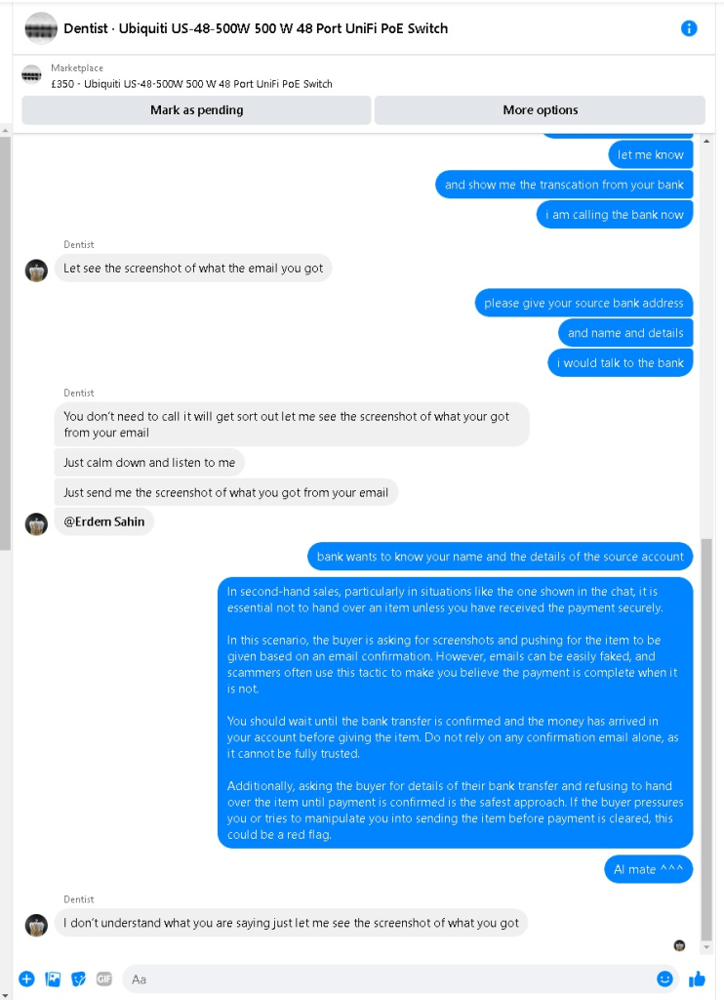
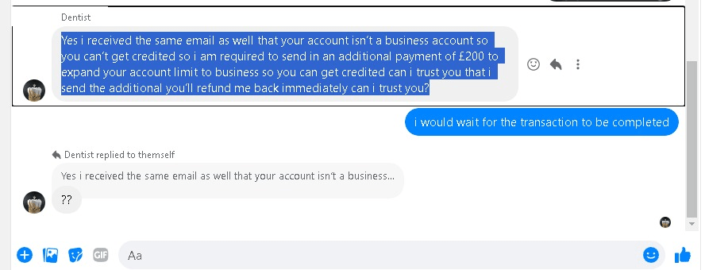
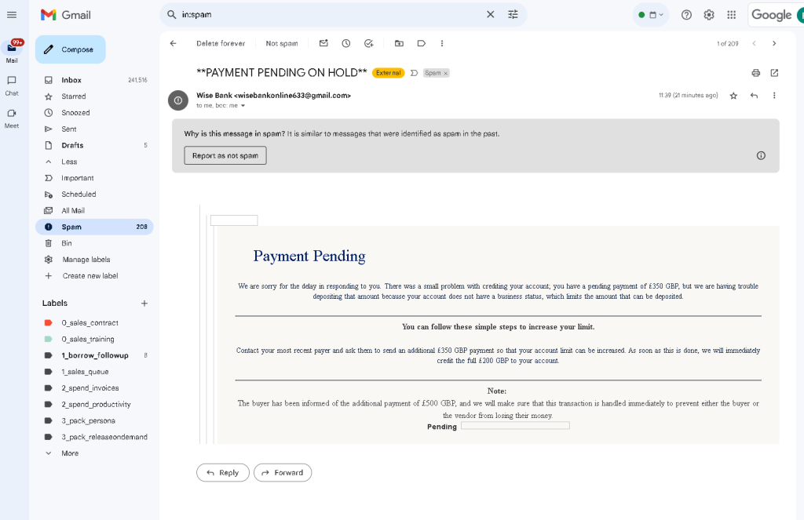

💸 Selling Second-Hand Goods in the UK: Key Tips for Secure Transactions
🛍️ Selling second-hand goods in the UK is a great way to declutter and earn some extra cash. However, it’s important to stay cautious when it comes to payment methods to avoid fraud or disputes. Whether you're selling smaller items or high-value electronics like your Ubiquiti PoE switch, here's a breakdown of the common payment methods and how to keep your transactions safe!
Payment Methods 💷
-
💵 Cash Payment
-
This is often the safest option, especially for local transactions.
-
It reduces the chances of chargebacks or disputes since you're exchanging the goods for cash on the spot.
-
Always meet the buyer in a public place for security!
-
🏦 Bank Transfer
-
While generally secure, you should wait until the money is fully deposited into your account before handing over the item.
-
There is less risk of chargebacks, but always confirm that the transfer is complete.
-
💳 PayPal
-
Though convenient, PayPal comes with risks, such as buyers filing disputes and requesting refunds after receiving the item.
-
If you decide to use PayPal, ensure that you follow their seller protection guidelines to avoid potential scams.
-
For high-value items, cash in hand is often a safer bet.
Safety Tips 🛡️
-
Meet in Public: Arrange to meet in a well-lit, busy area to ensure your safety and reduce the risk of scams.
-
Clear Communication: Be transparent with the buyer about the item’s condition and ensure both parties agree on the terms of sale before meeting.
-
Verify Payment: Always verify that the money has arrived before handing over the goods. Never rely on screenshots of transfers, especially if dealing with bank transfers or PayPal payments.
💡 If you’re selling your Ubiquiti PoE switch or another high-value item, cash in hand is likely the safest approach. But whatever method you choose, a cautious and smart approach will help ensure a smooth and secure transaction.
In second-hand sales, particularly in the UK, sharing bank details such as your account number and sort code is relatively common when receiving payments via bank transfers. However, there are some risks to consider:
-
Fraudulent Activity: While bank details (sort code and account number) alone are usually insufficient to withdraw money, fraudsters could attempt to use this information to create fake direct debits or other unauthorized transactions. Always ensure you’re dealing with a trustworthy buyer.
-
Phishing Scams: Fraudsters may try to use your bank details to convince your bank to disclose additional information or may target you with phishing attacks.
-
No Immediate Buyer Protection: Unlike services such as PayPal, bank transfers offer limited protection in case of fraud. Once a transfer is complete, it can be challenging to get the money back if a transaction goes wrong.
-
Delayed Payments: Bank transfers can take a day or more to process, and the buyer may claim they've sent the money when they haven't. Always wait for the funds to clear before sending or releasing the item.
How to Mitigate Risks:
-
Use a Business Account: If possible, use a separate bank account for business transactions, keeping your personal details more secure.
-
Double-Check Buyer’s Information: Ensure you’re dealing with a reputable buyer and avoid buyers who rush the payment or ask for unusual payment methods.
-
Use Payment Platforms: Consider using platforms that offer buyer and seller protection like PayPal, which can provide recourse if the deal goes wrong.
It’s always wise to be cautious and keep an eye on your bank statements after sharing your bank details.
In second-hand sales, particularly in situations like the one shown in the chat, it is essential not to hand over an item unless you have received the payment securely.
In this scenario, the buyer is asking for screenshots and pushing for the item to be given based on an email confirmation. However, emails can be easily faked, and scammers often use this tactic to make you believe the payment is complete when it is not.
You should wait until the bank transfer is confirmed and the money has arrived in your account before giving the item. Do not rely on any confirmation email alone, as it cannot be fully trusted.
Additionally, asking the buyer for details of their bank transfer and refusing to hand over the item until payment is confirmed is the safest approach. If the buyer pressures you or tries to manipulate you into sending the item before payment is cleared, this could be a red flag.


How they trick you ? With the Email >>> Do not Click

Based on the messages, it strongly suggests that this interaction could be a scam. Here are several red flags:
-
Request for Additional Payment: The buyer is asking for an additional £200 to "expand your account limit to a business account"—this is highly suspicious. Legitimate transactions do not require sellers to upgrade accounts or pay fees for the buyer to complete a payment.
-
Pressuring for Trust: The buyer is asking if they can trust you to refund the money after they send the additional payment. This is a common scam tactic where they try to make you feel obligated to act on their behalf before you've received any real payment.
-
Repeated Request for Screenshots: Scammers often ask for screenshots to create a sense of urgency or confusion, distracting you from the fact that you haven’t received any actual payment.
-
Vague Information: The buyer's explanations about why the payment hasn't gone through are convoluted and don't match standard banking processes.
In short, do not send the item, and do not send any money. It's best to cease communication with the buyer and block them if needed. Always wait for confirmed bank transfers before handing over an item in a second-hand sale.
Mitigation :
-
Make sure the buyer sees the items
-
Handle after the transfer is complete
🔗 Connect with me for more tips and advice:
Imported from rifaterdemsahin.com · 2024